| 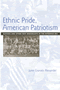 |
Ethnic Pride, American Patriotism
Slovaks and Other New Immigrants in the Interwar Era
Alexander, June Granatir 296 pp • 6x9 • Spring 2004
paper 978-1-59213-252-2
cloth 978-1-59213-251-5
|
|
Family and Gender Among American Muslims
Issues Facing Middle Eastern Immigrants And Their Descendants
edited by Aswad, Barbara C. and Barbara Bilgé 344 pp • 6x9 • Spring 1996
paper 978-1-56639-443-7
cloth 978-1-56639-442-0
|
|
American Conversations
Puerto Ricans, White Ethnics, and Multicultural Education
Bigler, Ellen 296
pp • 5.5x8.25 • Spring 1999
paper 978-1-56639-688-2
cloth 978-1-56639-687-5
|
|
Borderless Borders
U.S. Latinos, Latin Americans, and the Paradox of Interdependence
edited by Bonilla, Frank, Edwin Meléndez, Rebecca Morales and María de los Angeles Torres 336 pp • 6x9 • Spring 1998
paper 978-1-56639-620-2
cloth 978-1-56639-619-6
|
|
Locating
Filipino Americans
Ethnicity and the Cultural Politics of Space
Bonus, Rick
248 pp • 6x9 • Spring 2000
paper 978-1-56639-779-7
cloth 978-1-56639-778-0
|
|
As French As Everyone Else?
A Survey of French Citizens of Maghrebin, African, and Turkish Origin
Brouard, Sylvain and Vincent Tiberj
Foreword by Pascal Perrineau, Translated by Jennifer Fredette
152 pp • 5.5x8.25 • Spring 2011
paper 978-1-4399-0296-7
cloth 978-1-4399-0295-0
|
|
Against the Deportation Terror
Organizing for Immigrant Rights in the Twentieth Century
Buff, Rachel Ida
282 pp • 6x9 • Fall 2017
paper 978-1-4399-1534-9
cloth 978-1-4399-1533-2 |
|
On Becoming Filipino
Selected Writings of Carlos Bulosan
Bulosan, Carlos, edited by E. San Juan, Jr.240 pp • 5.5x8.25 • Spring 1995
paper 978-1-56639-310-2
cloth 978-1-56639-309-6
|
|
Maya In Exile
Guatemalans in Florida
Burns, Allan F. introduction by Jerónimo Camposeco256
pp • 5.5x8.25 • Spring 1993
paper 978-1-56639-036-1
cloth 978-1-56639-035-4 |
|
Caribbean Migration to Western Europe and the United States
Essays on Incorporation, Identity, and Citizenship
edited by Cervantes-Rodriguez, Margarita, Ramon Grosfoguel and Eric Mielants 270 pp • 6x9 • Fall 2008
cloth 978-1-59213-954-5
|
|
Hapa Girl
A Memoir
Chai, May-lee 232 pp • 5.5x8.25 • Spring 2007
paper 978-1-59213-616-2
cloth 978-1-59213-615-5
|
| 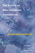 |
The Politics of New Immigrant Destinations
Transatlantic Perspectives
edited by Chambers, Stefanie, Diana Evans, Anthony M. Messina, and Abigail Fisher Williamson
348 pp • 6x9 • Spring 2017
paper 978-1-4399-1463-2
cloth 978-1-4399-1462-5
|
 |
Somalis in the Twin Cities and Columbus
Immigrant Incorporation in New Destination
Chambers, Stefanie
250 pp • 5.5x8.25 • Spring 2017
paper 978-1-4399-1442-7
cloth 978-1-4399-1441-0
|
|
Chinese American Transnationalism
The Flow of People, Resources, and Ideas between China and America during the Exclusion Era
edited by Chan, Sucheng
312 pp • 6x9 •
Fall 2005
paper 978-1-59213-435-9
cloth 978-1-59213-434-2
|
| 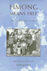 |
Hmong
Means Free
Life in Laos and America
edited by Chan, Sucheng 296 pp • 6x9
• Spring 1994
paper 978-1-56639-163-4
cloth 978-1-56639-162-7
|
|
Entry Denied
Exclusion and the Chinese Community in America, 1882-1943
Chan, Sucheng 320 pp • Spring 1991
paper 978-1-56639-201-3
cloth 978-0-87722-798-4
|
|
The
Vietnamese American 1.5 Generation
Stories of War, Revolution, Flight, and New Beginnings
edited by Chan, Sucheng
344 pp • 6x9 • Spring 2006
paper 978-1-59213-501-1
cloth 978-1-59213-500-4
|
|
Smuggled Chinese
Clandestine Immigration to the United States
Chin, Ko-lin, foreword by Douglas S. Massey 296 pp • 6x9 • Fall 1999
paper 978-1-56639-733-9
cloth 978-1-56639-732-2
|
|
Paper
Son
One Man's Story
Chin, Tung Pok with Winifred C. Chin, introduction by K. Scott
Wong
184 pp • 5.5x8.25 • Fall 2000
paper 978-1-56639-801-5
cloth 978-1-56639-800-8
|
|
The Irish in Philadelphia
Ten Generations of Urban Experience
Clark, Dennis264 pp • Spring 1982
paper 978-0-87722-227-9
cloth 978-0-87722-057-2
|
|
The Transnational Politics of Asian Americans
edited by Collet, Christian, Pei-te Lien
Foreword by Don Nakanishi
252 pp • 6x9 • Spring 2009
paper 978-1-59213-861-6
cloth 978-1-59213-860-9
|
|
Migration, Transnationalization, and Race in a Changing New York
edited by Cordero-Guzmán, Héctor R., Robert C. Smith and Ramón Grosfoguel
320 pp • 7x10 • Fall 2001
paper 978-1-56639-888-6
cloth 978-1-56639-887-9
Excerpt available |
|
New Immigrants, Old Unions
Organizing Undocumented Workers in Los Angeles
Delgado, Héctor L. 200 pp • 5.5x8.25 • Spring 1993
paper 978-1-56639-205-1
cloth 978-1-56639-044-6
|
| 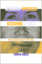 |
Becoming
American, Becoming Ethnic
College Students Explore Their Roots
edited by Dublin, Thomas 256 pp • 6x9
• Spring 1996
paper 978-1-56639-439-0
cloth 978-1-56639-438-3
|
|
Filipino American Lives
Espiritu, Yen Le240
pp • 6x9 • Spring 1995
paper 978-1-56639-317-1
cloth 978-1-56639-316-4
|
|
The
New American History
edited by Foner, Eric
Revised and Expanded Edition
400 pp • 6x9 • Spring 1997
paper 978-1-56639-552-6
cloth 978-1-56639-551-9
|
|
The
First Suburban Chinatown
The Remarking of Monterey Park, California
Fong, Timothy P.
240 pp • 6x9 • Fall 1993
paper 978-1-56639-262-4
cloth 978-1-56639-123-8
|

|
Latino Lives in America
Making It Home
Fraga, Luis R., John A. Garcia, Rodney E. Hero, Michael Jones-Correa, Valerie Martinez-Ebers, and Gary Segura
224 pp • 5.5x8.25 • Spring 2010
paper 978-1-43990-049-9
cloth 978-1-43990-048-2
|
|
Constructing Muslims in France
Discourse, Public Identity, and the Politics of Citizenship
Fredette, Jennifer
222 pp • 6x9 • Fall 2013
paper 978-1-4399-1029-0
cloth 978-1-4399-1028-3 |
 |
Reshaping
Ethnic and Racial Relations in Philadelphia
Immigrants in a Divided City
Goode, Judith and Jo Anne Schneider 296 pp
• 6x9 • Spring 1994
paper 978-1-56639-141-2
cloth 978-1-56639-140-5
|
|
Deciding to be Legal
A Maya Community in Houston
Hagan, Jacqueline Maria
224 pp • 5.5x8.25 • Fall 1994
paper 978-1-56639-257-0
cloth 978-1-56639-256-3 |
 |
Seeking
Community in a Global City
Guatemalans and Salvadorans in Los Angeles
Hamilton, Nora and Norma Stoltz Chinchilla 304
pp • 6x9 • Spring 2001
paper 978-1-56639-868-8
cloth 978-1-56639-867-1
|
|
Defining
America Through Immigration Policy
Hing, Bill Ong, foreword by Anthony D. Romero, Esq. 336
pp • 7x10 • Fall 2003
paper 978-1-59213-233-1
cloth 978-1-59213-232-4
|
|
Ethical Borders
NAFTA, Globalization, and Mexican Migration
Hing, Bill Ong
216 pp • 6x9 • Spring 2010
paper 978-1-59213-925-5
cloth 978-1-59213-924-8
|
|
The
Politics of Diversity
Immigration, Resistance, and Change in Monterey Park, California
Horton, John 296 pp • 6x9 • Fall
1995
paper 978-1-56639-328-7
cloth 978-1-56639-327-0
|
|
Across
the Pacific
Asian Americans and Globalization
edited by Hu-DeHart, Evelyn
232 pp • 6x9 • Spring 1999
paper 978-1-56639-824-4
cloth 978-1-56639-710-0
|
| 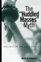 |
The
"Huddled Masses" Myth
Immigration and Civil Rights
Johnson, Kevin R. 264 pp • 6x9 •
Fall 2003
paper 978-1-59213-206-5
cloth 978-1-59213-205-8
|
| 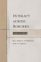 |
Intimacy across Borders
Race, Religion, and Migration in the U.S. Midwest
Juffer, Jane
204 pp • 5.5x8.25 • Spring 2013
paper 978-1-4399-1053-5
cloth 978-1-4399-1052-8
|
| 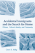 |
Accidental Immigrants and the Search for Home
Women, Cultural Identity, and Community
Kelley, Carol E.
190 pp • 6x9 • Spring 2013
paper 978-1-4399-0946-1
cloth 978-1-4399-0945-4 |
|
Newcomers
in Workplace
Immigrants and the Restructing of the U.S. Economy
edited by Lamphere, Louise, Alex Stepick and Guillermo Grenier
320 pp • 6x9 • Fall 1993
paper 978-1-56639-131-3
cloth 978-1-56639-124-5 |
|
La
Merica
Images of Italian Greenhorn Experience
La Sorte, Michael A. 224 pp • 5.5x8.25
• Spring 1985
paper 978-1-59213-234-8
cloth 978-0-87722-382-5
|
|
A Midwestern Mosaic
Immigration and Political Socialization in Rural America
Lay, J. Celeste
238 pp • 6x9 • Spring 2012
paper 978-1-4399-0793-1
cloth 978-1-4399-0792-4
|
|
Transnational
Asian American Literature
Sites and Transits
edited by Lim, Shirley Geok-lin, John Blair Gamber, Stephen
Hong Sohn and Gina Valentino
320 pp • 6x9 • Fall 2005
paper 978-1-59213-451-9
cloth 978-1-59213-450-2
|
|
Chinese
St. Louis
From Enclave to Cultural Community
Ling, Huping
296 pp • 6x9 • Fall 2004
paper 978-1-59213-039-9
cloth 978-1-59213-038-2
|
|
Undocumented Fears
Immigration and the Politics of Divide and Conquer in Hazleton, Pennsylvania
Longazel, Jamie
226 pp • 6x9 • Spring 2016
paper 978-1-4399-1268-3
cloth 978-1-4399-1267-6
|
 |
The
Maya Diaspora
Guatemalan Roots, New American Lives
edited by Loucky, James and Marilyn M. Moors 248
pp • 6x9 • Fall 2000
paper 978-1-56639-795-7
cloth 978-1-56639-794-0
|
|
Desis
in the House
Indian American Youth Culture in New York City
Maira, Sunaina Marr
256 pp • 6x9 • Fall 2001
paper 978-1-56639-927-2
cloth 978-1-56639-926-5
|
|
Crossing
the Neoliberal Line
Pacific Rim Migration and the Metropolis
Mitchell, Katharyne
296 pp • 6x9 • Fall 2004
paper 978-1-59213-084-9
cloth 978-1-59213-083-2
|
|
The Muslim Question in Europe
Political Controversies and Public Philosophies
O’Brien, Peter
318 pp • 6x9 • Spring 2016
paper 978-1-4399-1277-5
cloth 978-1-4399-1276-8
|
|
The
New Asian Immigration in Los Angeles and Global Restructuring
edited by Ong, Paul, Edna Bonacich and Lucie Cheng
344 pp • 6x9 • Fall 1994
paper 978-1-56639-218-1
cloth 978-1-56639-217-4 |
| 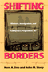 |
Shifting
Borders
Rhetoric, Immigration, and California's Proposition 187
Ono, Kent A. and John M. Sloop 264 pp •
6x9 • Fall 2001
paper 978-1-56639-917-3
cloth 978-1-56639-916-6
|
|
Citizenship and Governance in a Changing City
Somerville, MA
Ostrander,
Susan A.
190 pp • 6x9 • Spring 2013
paper 978-1-4399-1013-9
cloth 978-1-4399-1012-2 |
 |
Illegal Migrations and the Huckleberry Finn Problem
Park, John S.W.
278 pp • 6x9 • Spring 2013
paper 978-1-4399-1047-4
cloth 978-1-4399-1046-7
|
| 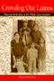 |
Crowding
Out Latinos
Mexican Americans in the Public Consciousness
Portales, Marco 240 pp • 6x9 • Fall
1999
paper 978-1-56639-743-8
cloth 978-1-56639-742-1
|
|
The Cubans of Union City
Immigrants and Exiles in a New Jersey Community
Prieto, Yolanda
224 pp • 6x9 • Spring 2009
paper 978-1-59213-300-0
cloth 978-1-59213-299-7
|
|
Música Norteña
Mexican Migrants Creating a Nation between Nations
Ragland, Cathy 268 pp • 6x9 • Spring 2009
paper 978-1-59213-747-3
cloth 978-1-59213-746-6
|
|
Waiting on Washington
Central American Workers in the Nation's Capital
Repak, Terry A.
272 pp • 5.5x8.25 • Spring 1995
paper 978-1-56639-302-7
cloth 978-1-56639-301-0 |
|
Songs
of the Caged, Songs of the Free
Music and the Vietnamese Refugee Experience
Reyes, Adelaida 248 pp • 5.5x8.25 •
Spring 1999
paper 978-1-56639-686-8
cloth 978-1-56639-685-1
|
|
Terrorizing Latina/o Immigrants
Race, Gender, and Immigration Politics in the Age of Security
Sampaio, Anna
230 pp • 6x9 • Fall 2015
paper 978-1-4399-1286-7
cloth 978-1-4399-1285-0
|
|
Unsettled
Cambodian Refugees in the New York City Hyperghetto
Tang, Eric
234 pp • 5.5x8.25 • Fall 2015
paper 978-1-4399-1119-8
cloth 978-1-4399-1118-1 |
|
Latinos
in New England
edited by Torres, Andrés
344 pp • 6x9 • Spring 2006
paper 978-1-59213-417-5
cloth 978-1-59213-416-8
|
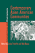 |
Contemporary
Asian American Communities
Intersections and Divergences
edited by Võ, Linda Trinh and Rick Bonus
264 pp • 7x10 • Spring 2002
paper 978-1-56639-938-8
cloth 978-1-56639-937-1
|
|
Gatherings
in Diaspora
Religious Communities and the New Immigration
edited by Warner, Stephen R. and Judith G. Wittner 416
pp • 6x9 • Spring 1998
paper 978-1-56639-614-1
cloth 978-1-56639-613-4
|
|
America's
Jews in Transition
Waxman, Chaim 290 pp • Fall 1983
paper 978-0-87722-329-0
cloth 978-0-87722-321-4 |
|
Detained
Immigration Laws and the Expanding I.N.S. Jail Complex
Welch, Michael 264 pp • 6x9 • Fall
2002
paper 978-1-56639-978-4
cloth 978-1-56639-977-7
|
|
From
Puerto Rico to Philadelphia
Puerto Rican Workers and Postwar Economies
Whalen, Carmen Teresa 328 pp • 7x10 •
Fall 2000
paper 978-1-56639-836-7
cloth 978-1-56639-835-0
|
|
The
Puerto Rican Diaspora
Historical Perspectives
edited by Whalen, Carmen Teresa and Víctor Vázquez-Hernández
320 pp • 6x9 • Spring 2005
paper 978-1-59213-413-7
cloth 978-1-59213-412-0
|
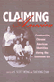 |
Claiming
America
Constructing Chinese American Identities during the Exclusion
Era
edited by Wong, K. Scott and Sucheng Chan
226 pp • 6x9 • Fall 1997
paper 978-1-56639-576-2
cloth 978-1-56639-575-5
|
|
An Immigrant Neighborhood
Interethnic and Interracial Encounters in New York before 1930
Yee, Shirley J.
256 pp • 5.5x8.25 • Fall 2011
paper 978-1-59213-128-0
cloth 978-1-59213-127-3
|
|
“A Road to Peace and Freedom”
The International Workers Order and the Struggle for Economic Justice and Civil Rights, 1930–1954
Zecker, Robert M.
430 pp • 6x9 • Fall 2017
paper 978-1-4399-1516-5
cloth 978-1-4399-1515-8 |
|
Musicians from a Different Shore
Asians and Asian Americans in Classical Music
Yoshihara, Mari
288 pp • 6x9 • Fall 2007
paper 978-1-59123-333-8
cloth 978-1-59123-332-1
|
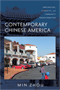 |
Contemporary Chinese America
Immigration, Ethnicity, and Community Transformation
Zhou, Min
312 pp • 6x9 • Spring 2009
paper 978-1-59213-858-6
cloth 978-1-59213-857-9
|